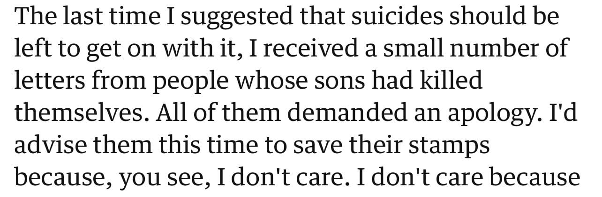
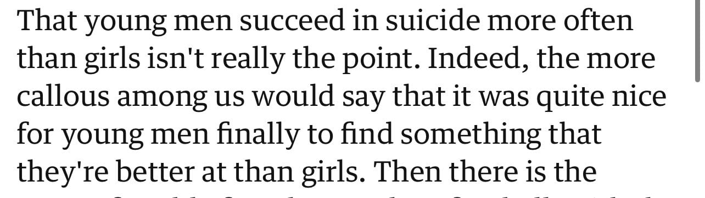

지난번에 자살하려는 사람들은 그냥 하도록 내버려 둬야 한다고 주장했을 때, 아들이 스스로 목숨을 끊은 부모들에게서 몇 통의 편지를 받았다. 그들은 모두 사과를 요구했다. 이번에는 우표값이나 아끼라고 말하고 싶다. 보다시피 나는 신경 쓰지 않으니까. 내가 신경 쓰지 않는 이유는…

젊은 남성들이 여성들보다 자살에 더 자주 성공한다는 것은 사실 핵심이 아니다. 사실 우리 중 좀 더 냉혹한 사람들은, 젊은 남성들이 마침내 여성들보다 잘하는 것을 찾았으니 꽤 잘된 일이라고 말할 것이다. 그리고 또…
남성자살에 대해 조롱하던 영국 여성작가 줄리 버칠
칼럼을 쓴 이후 몇년후 작가의 아들이 자살함


꼬숩노 ㅋㅋ 나같아도 부모가 페미면 쪽팔려서 자살할듯 ㅋㅋ